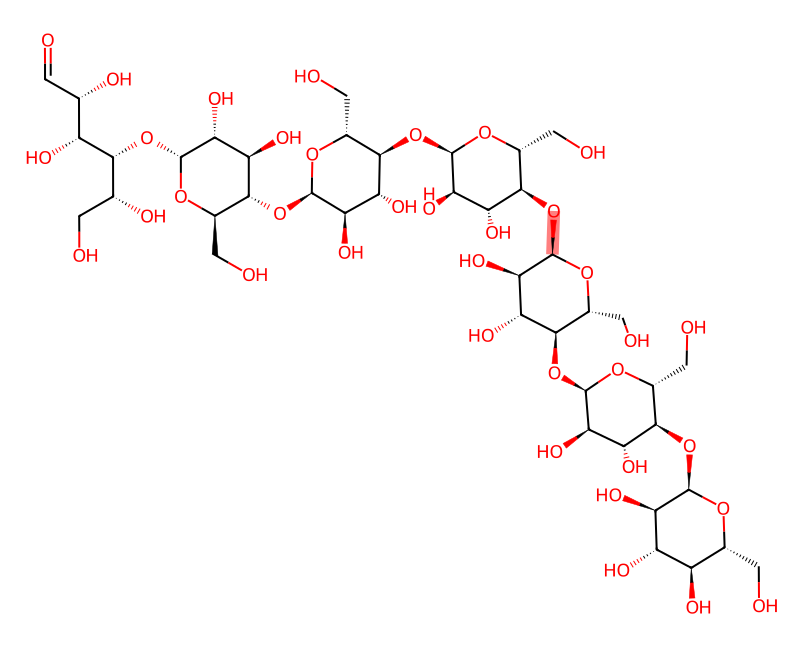
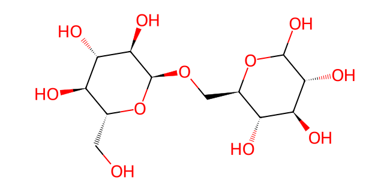
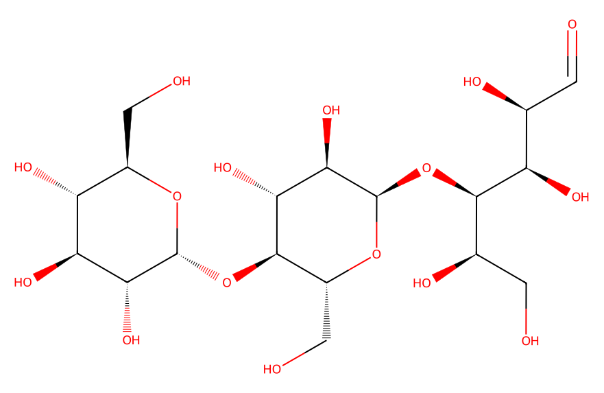
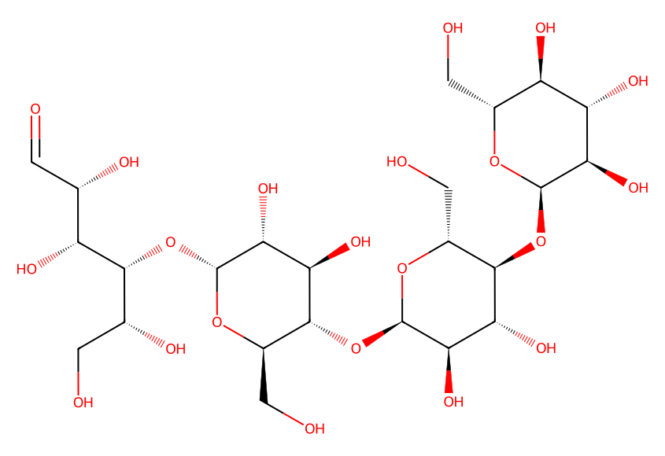
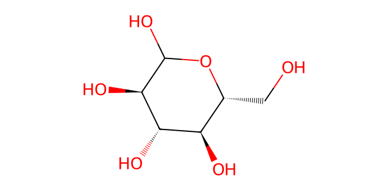
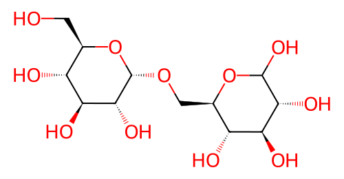
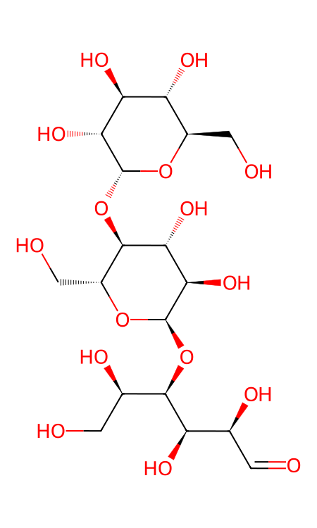
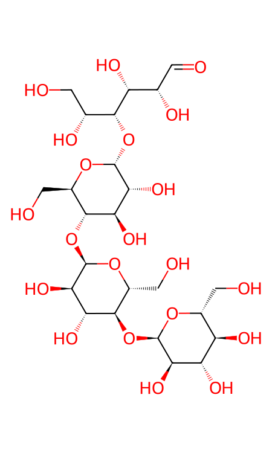
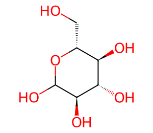

Which glycosidic bonds are cleaved?
Actual chemical graphs replace bead-like residue symbols. Two independent molecules isolate α1→4 versus α1→6 linkages: a seven-residue maltoheptaose and a two-residue isomaltose. They are not a single branched starch fragment.
One selected internal amylase cleavage yields3+4 residues while isomaltose remains intact. It is an illustrative permissible cleavage, not a universal amylase product profile. Brush-border activities complete the remaining five α1→4 and one α1→6 hydrolyses. Chemical connectivity changes are discrete teaching states, not enzyme binding, atom motion, a3D conformation or measured kinetics.
Two independent substrates
Residue inventory, common scale0–9
Cleaved bonds / water used, common scale0–7





State 0 · Two independent substrates

Nine residues, seven glycosidic bonds, two molecules; no water consumed yet.
State 1 · One selected internal amylase cleavage


One H₂O used; five α1→4 bonds and the independent α1→6 bond remain. Three fragments total. This selected cleavage is illustrative, not a universal amylase product profile.

Overall selected chemical balance: C₄₂H₇₂O₃₆ + C₁₂H₂₂O₁₁ +7H₂O →9C₆H₁₂O₆. Hydrolysis adds water; residue count remains nine. Sucrase-isomaltase and maltase-glucoamylase activities provide brush-border completion; neither enzyme is drawn as an invented blob. Canonical open-chain/cyclic depictions are chemical conventions, not a simulation of mutarotation.
Starts paused. Twelve presentation seconds are not biological time. Play is explicit; replay resets paused, step/seek pause, preference changes/page hiding/printing pause. Enlarge any vector for its full stereochemistry; focus the image to pan with arrows/Home/End/Page Up/Down.
Molecular facts: PubChem maltoheptaose169622, isomaltose439193, maltotriose92146, maltotetraose123966, D-glucose5793. Original RDKit2D drawings from those connectivity/stereochemistry records. Physiology: human brush-border SI/MGAM study and the separately cited chapter digestive-enzyme sources. Source/state/reproduction record.